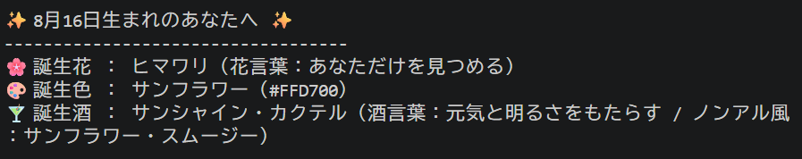
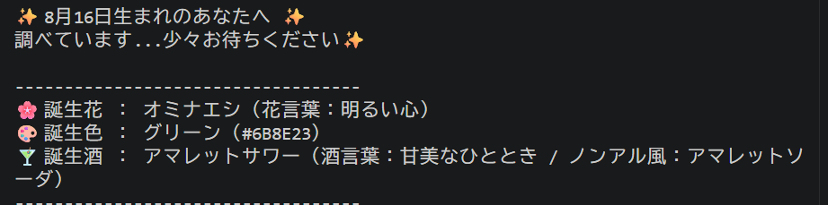

誕生日を入力すると誕生花、誕生カラー、誕生酒を知れるシンプルなものを作った
APIはチャットGPTを使用
1import json
2from openai import OpenAI
3
4client = OpenAI(api_key="sk-ここに自分のAPIキーを入れる")
5
6
7def get_birthday_info(birthday_text):
8 """「8月1日」などのテキストをそのまま受け取って情報を取得する関数"""
9 prompt = f"""
10 {birthday_text}の「誕生花（花言葉）」「誕生色（カラー名と16進数カラーコード）」「誕生酒（カクテル名と酒言葉、ノンアルコールアレンジも）」を教えてください。
11 ※季節の代表的な花（8月のひまわり等）ばかりに偏らないよう、その日付ならではの固有の誕生花・誕生色・誕生酒を優先して選んでください。
12 必ず以下のJSON形式のみで出力してください。余計な説明文は不要です。
13
14 {{
15 "flower": "花の名前（花言葉：〇〇）",
16 "color": "色の名前（#XXXXXX）",
17 "drink": "お酒の名前（酒言葉：〇〇 / ノンアル風：〇〇）"
18 }}
19 """
20
21 response = client.chat.completions.create(
22 model="gpt-4o-mini",
23 response_format={"type": "json_object"},
24 messages=[{
25 "role": "user",
26 "content": prompt,
27 }],
28 )
29 return json.loads(response.choices[0].message.content)
30
31
32# --- メインの処理 ---
33print("=== 🎂 誕生日のギフト情報検索 🎂 ===")
34
35# ★ここをひとつにまとめる！
36birthday_text = input("誕生日はいつですか？（例: 8月1日、または 11月25日）: ")
37
38print(f"\n✨ {birthday_text}生まれのあなたへ ✨")
39print("調べています...少々お待ちください✨\n")
40
41# まとめたテキストを関数にそのまま渡す
42info = get_birthday_info(birthday_text)
43
44print("-" * 35)
45print(f"🌸 誕生花 ： {info['flower']}")
46print(f"🎨 誕生色 ： {info['color']}")
47print(f"🍸 誕生酒 ： {info['drink']}")
48print("-" * 35)8月と入力すると8月1日でも20日でもひまわりになってしまうことが分かった。これはチャットGPTが「月」と「日」を分けて検索してしまっていることと、詳しく検索されていないことが原因だとわかった。そこでAIに誕生日を「月」と「日」に分けずに聞くようにすることと、もっと詳しく検索をかけれるようなコードに書き換えてもらった。
＜失敗＞

＜成功＞
